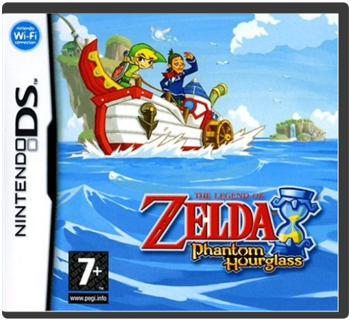
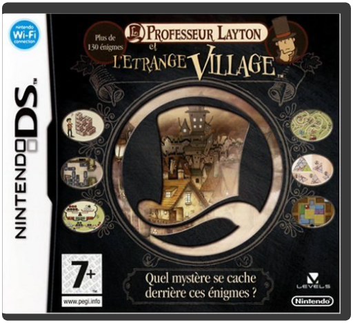
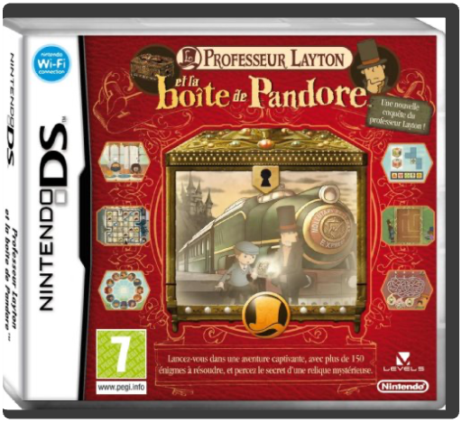
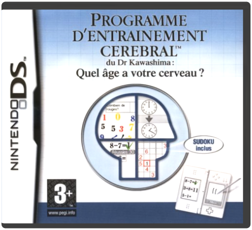

the legend of zelda : phantom hourglassnintendo 4.5 A la fin de l'aventure de Wind Waker, Link, Tetra et les pirates de Tetra partaient à la recherche de nouvelles contrées. Plusieurs mois plus tard, leur navire se retrouve dans une partie de l'océan entourée d'un épais brouillard et tous y découvrent un mario kart dsnintendo 4.5 la course de kart la plus déjantée jamais imaginée revient dans une version portable pur jus.
au total, vous disposez de seize personnages différents, chacun possédant jusqu?à sept karts. pas moins de 32 circuits répartis sur huit championnats vous attendent, avec des tracés inédits mais aussi des grands classiques des épisodes précédents.
aux carapaces et champignons viennent s?ajouter quelques nouvelles fourberies. une fusée qui vous emporte à grande vitesse ou encore un poulpe qui jette son encre les concurrents. c?est aussi un nouveau système de bonus que vous découvrirez. il favorise les courses serrées en accordant les meilleurs pouvoirs aux compétiteurs les moins performants.
l?écran du bas montre la carte et signale aussi obstacles à éviter et projectiles à esquiver. et si le solo vous lasse, tentez l?aventure à 8 via la liaison sans fil (même avec un seul jeu) ou le multijoueur en ligne grâce au wi-fi !
jeu multijoueurréseau localouiréseau internet ouimultijoueursouinombre de joueurs maximum 8age minimum recommandé: 3 ans
langue:de/fr/es/en/it mario party dsnintendo 4.5 Grâce à Mario Party DS, vos amis et vous pouvez organiser de véritables festivals de mini-jeux où vous voulez et quand vous voulez. Jusqu'à quatre joueurs peuvent s'affronter pour devenir la vedette de Mario Party en n'utilisant qu'une carte de jeu. Les professeur layton 1 - l'étrange villagenintendo 4.5 Quel curieux village, bourré d'énigmes en tout genre que voici ? Un village fait pour la perspicacité du professeur layton...
Découvrez une multitude d'énigmes et jouez au détective lors d'une aventure où seul résoudre des énigmes vous permettra de lever le voile sur cette affaire ! Professeur Layton et l'étrange village sur Nintendo DS vous propose plus de 135 énigmes qui tiendront en haleine même les plus grands fans de jeux de logique. Vous incarnez le professeur Hershel Layton qui est chargé de résoudre le mystère qui plane sur les paisibles habitants de Saint-Mystère. Appelé par Dahlia Reinhold, vous arrivez dans le village pour enquêter sur un étrange testament et vous découvrez rapidement que les habitants ont tous une même obsession : les énigmes. Des devinettes basiques aux énigmes mathématiques, chaque personne que vous rencontrerez à Saint-Mystère vous proposera une énigme à résoudre sur l'écran tactile de la DS. Une fois, vous devrez essayer de trouver le moyen de faire traverser des loups et des poulets sur une barque, et la fois d'après, vous essaierez de disposer des allumettes afin de créer une image en ne déplaçant que deux d'entre-elles. Le niveau de difficulté augmente au fur et à mesure jusqu'à parvenir aux énigmes les plus coriaces... professeur layton 2 - la boîte de pandorenintendo 4.5 Un nouveau Mystère se prépare
Un billet pour le train pour l'Express Molentary est le premier indice du Prof Chaque énigme comporte trois niveaux de difficultés, donc vous ne devriez jamais être coincés L'Express Molentary est un lieu parfait pour faire des rencontres et bavarder. Même les soins de votre hamster favori deviennent des casse-tête
Après avoir libéré la Pomme d’Or dans le premier tome L’étrange Village, le Professeur Layton et Luke, son jeune apprenti, font leur grand retour dans une nouvelle aventure faite d’énigmes et de mystères : Professeur Layton et la Boîte de Pandore. Des cinématiques toujours plus nombreuses et des rebondissements vous donneront envie de continuer à vous creuser le cerveau sur des casse-tête inédits et retors.
Le Professeur Layton, le Sherlock Holmes des casse-tête, et Luke son fidèle apprenti sont confrontés à un nouveau mystère. C’est donc à eux de résoudre un nombre incalculable d’énigmes pour déterminer qui, ou quoi, est responsable de la mort du Dr Schrader, le mentor du Professeur Layton. Est-ce là l’oeuvre de la Boîte de Pandore, une mystérieuse boîte qui d’après la légende tue tous ceux qui osent l’ouvrir ? Le Professeur Layton et Luke trouvent un indice qui marque
le début de leur aventure : un billet de train à utiliser sur le Molentary Express…
Points Forts :
Professeur Layton et la boite de Pandore présente un nouveau mystère à élucider et plus de 150 nouveaux casse-tête, énigmes et exercices de logique pour défier les joueurs pour leur plus grand plaisir.En plus des énigmes contenues dans le jeu, les joueurs équipés d’un accès à Internet sans fil à haut débit pourront connecter leur console Nintendo DS et Nintendo DSi™ à la connexion Wi-Fi Nintendo afin de télécharger des énigmes bonus. Une nouvelle énigme sera disponible chaque semaine et ce, pendant les 33 semaines suivant la sortie du jeu.Cette nouvelle aventure réserve encore plus de cinématiques que la précédente.Scénario :
Le professeur Layton reçoit une lettre de son mentor, le Dr Schrader. Dans ce courrier, celui-ci lui indique qu’il a découvert une boîte qu’on dit maudite : la Boîte de Pandore ! Il demande au Professeur de poursuivre les investigations sur cette boîte s’il lui arrivait malheur. Inquiet le Professeur Layton et son fidèle apprenti Luke se précipitent à Londres
chez le Dr Schrader. Mais ils arrivent trop tard… Ils le retrouvent mort dans son appartement… Que lui est-il vraiment arrivé ? En guise de premier indice, le duo de détectives découvre un billet du Molentary Express près du corps du Dr Schrader. Mais, curieusement, sur ce billet ne figure aucune destination. C’est donc à bord de ce train – le plus luxueux du monde - que commence l’enquête du Professeur Layton : la clef de l’énigme se trouve au terminus de la ligne… Une ville fantôme baignée de néons, qui cache dans ses collines un manoir millénaire et son propriétaire qu’on dit immortel. Et terriblement dangereux.
Les personnages :
Le Professeur Layton. C’est un archéologue et un expert renommé en casse-tête. Il est reconnaissable à son chapeau démesurément grand.
Luke. C’est l’assistant autoproclamé du Professeur Layton. Il a encore beaucoup de chemin à faire avant d’égaler le maître dans l’art de résoudre puzzles et autres énigmes. C’est aussi un grand ami des animaux.
L’Inspecteur Chelmey. Cet inspecteur de police dont l’identité avait été usurpée par Don Paolo dans Professeur Layton et l’Etrange Village est présent en chair et en os dans ce nouvel opus.
Vladimir. Cet étrange personnage semble avoir un lien particulier avec la Boîte de Pandore.
Modes de jeu :
Le mode de jeu principal est le mode aventure :
Dans ce mode les joueurs incarnent le Professeur Layton et son assistant Luke. Ils embarquent à bord du Molentary Express et découvrent deux mystérieux villages le long de la ligne. Que ce soit dans le train ou dans les villages, Le Professeur Layton et Luke devront résoudre les énigmes que leur proposent les personnages qu’ils croisent pour découvrir la vérité sur la Boîte de Pandore.
La valise du Professeur :
Elle abrite le journal qui permet de faire le point sur la progression du joueur dans l’aventure et la liste des mystères que le Professeur et Luke cherchent à résoudre. Mais aussi trois éléments surprenants: un appareil photo qui permet au Professeur Layton et à Luke de photographier leur environnement et de jouer au jeu des différences ; un Hamster que le Professeur et son apprenti ont recueilli dans le train et qu’ils tentent de faire mincir et enfin un service à thé avec lequel le
joueur peut concocter des potions qui pourront lui servir à certains moments du jeu.
Les bonus :
En cliquant sur l’icône bonus dans le menu d’accueil; les joueurs peuvent avoir accès à la liste de toutes les énigmes qu’ils ont déjà résolues. Ils peuvent ainsi tenter de les résoudre à nouveau ou proposer à leurs proches de s’y essayer. Ce menu permet aussi de télécharger les nouveaux puzzles disponibles de manière hebdomadaire via la Nintendo Wi-Fi connection. programme d'entraînement cérébral du professeur kawashima - quel âge a votre cerveau ?nintendo 4 l?objectif ultime de brain training est simple: déterminer l?âge de votre cerveau. et garder une tête bien faite de 20 ans, ce n?est pas facile, avec le temps qui passe. le jeu a été développé par un célèbre professeur japonais dans le but d?entretenir son cerveau avec des exercices parfois vraiment retors, même s?il n?ont l?air de rien. comme lorsqu?il faut dire dans le micro de quelle couleur s?affiche un mot et que "rouge" apparaît écrit en bleu. de la gym pour neurones, quoi.
pratiquer ce jeu un peu tous les jours aurait la faculté de maintenir votre cerveau en forme. d?ailleurs, brain training est un véritable phénomène de société au japon, y compris dans les maisons de retraite. parce que, manifestement, ce genre de remue-méninge plait à tout le monde. alors, pourquoi pas vous ?
age minimum recommandé: 3 ans et +
langue:française |

 Made with Delicious Library
Made with Delicious Library